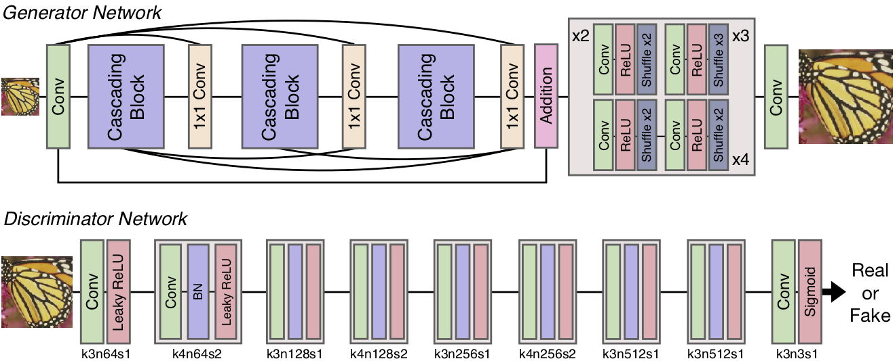

|
I am PhD student at School of Computer Engineering, Ajou University (Suwon, Korea). My research interests are image and video enhancement efficient deep learning model. |
|
[Github]
[Resume]
[Google Scholar]
email: nmhkahn at gmail dot com |
Publications
|  |
Efficient Deep Neural Network for Photo-realistic Image Super-Resolution Namhyuk Ahn, Byungkon Kang, Kyung-Ah Sohn arXiv preprint arXiv:1903.02240 [arXiv] [GitHub] |

|
Fast, Accurate, and Lightweight Super-Resolution with Cascading Residual Network Namhyuk Ahn, Byungkon Kang, Kyung-Ah Sohn European Conference on Computer Vision (ECCV), 2018. [arXiv] [GitHub] |

|
Image Super-resolution via Progressive Cascading Residual Network Namhyuk Ahn, Byungkon Kang, Kyung-Ah Sohn IEEE Conference on Computer Vision and Pattern Recognition Workshops (CVPRW), 2018. [Paper] [GitHub] |

|
Image Distortion Detection using Convolutional Neural Network Namhyuk Ahn, Byungkon Kang, Kyung-Ah Sohn The 4th Asian Conference on Pattern Recognition (ACPR), 2017. [arXiv] |
Work Experience
Research Intern, Naver (June 2018 ~ Aug 2018)- Working on high-resolution photo-realistic video-to-video face translation.
Awards
Honorable Mention Award, NTIRE 2018 Challenge (June 2018)- Single image super-resolution challenge (Track 1: Classic Bicubic) on New Trends in Image Restoration and Enhancement (NTIRE) workshop in conjunction with CVPR 2018.
Teaching Experience
Lecture Instructor, Fastcampus (Aug 2017 - Aug 2017)- Deep learning and TensorFlow tutorial. lecture material (korean).